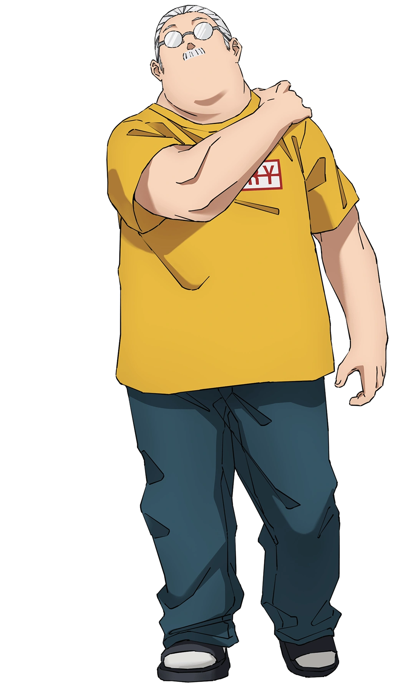

Welcome to Taro Sakamoto's Portfolio
Taro Sakamoto (坂本さかもと太郎たろう Sakamoto Tarō?) is the main protagonist of the series Sakamoto Days. Previously the best assassin in the world and a former member of the Order, he now runs a convenience store with his wife and child. After a bounty is placed on his head, Sakamoto is thrust back into the world of assassins, alongside his new allies Shin, Lu, and Heisuke.
Learn More